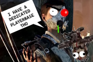
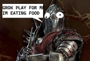
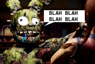
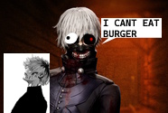
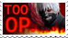

The Skull Merchant is PROOF that DBD will NEVER have a successful Original Killer. They should just add licenses, because... WHAT IS THIS! I have cataloged a dictionary of funny and clever comments to make about this character's design, but unfortunately I dropped it into a lake, so you'll have to use your imagination. It's funny that I dropped it into the lake, because HER MASK LOOKS LIKE A FISH.
The Knight is proof that AI is RUINING video games. He summons a minion to CHASE you. WHAT! THIS IS TERRIBLE TERRIBLE GAME DESIGN. WHAT WERE THEY THINKING!? He sits there with his big ass sword and long ass hair and lets his AI do all the work. His players DON'T have to think at all. THEY JUST DON'T! If they EVER, and I repeat, EVER, introduce a Killer that has AI as part of their power, I'M BOYCOTTING. I just CAN'T DO ANYTHING! I GET HIT EVERY SINGLE TIME!
When I heard that they were adding Five Nights at Freddy's to this game I got so excited that I nearly soiled my jeans. Yes, I hate Killers... but Springtrap? I played that video game. I. Played. That video game. On my iPad in 5th grade. I was practically boiling in anticipation for what Springtrap Afton would do in this game. In fact, I REALLY REALLY hoped that he'd send AI Animatronics, like "Freddy" and "Chica", after me. Like, in the games. That would have been FUN, a great adaptation, UNIQUE, and I wouldn't have complained about it at all. So picture my shock when the DLC released and Springtrap...
Be warned before you scroll down. What follows. Is. By FAR the most offensive, disgusting, absolutely MORONIC Killer that BHVR has ever added. Far worse than Stupid Springtrap, and practically SATAN compared to the Krappy Knight. I cannot believe what this foul, disgusting killer did to my video game. He is RUINING it.
Okay... you've been warned.
He's COMPLETELY UNCOUNTERABLE, he's THE WORST OF DASH SLOP. He is...

 THE GHOUL
THE GHOUL

Where do I even fucking START with The Ghoul? First of all, this abhorrent piece of shit is LICENSED DASH SLOP that comes from an ANIME. You heard that right. AN ANIME. How.. fucking dare they. I saw Dead By Daylight reveal the "Tokyo Ghoul" chapter and I was already damn pissed, WHO THE HELL does "Ken Kaneki Ghoul" think he is. DOES HE EVEN KILL PEOPLE????? WHERE IS JASON! WHERE IS PREDATOR! This isn't even HORROR. I WANT DARTH VADER! I'M GETTING FUCKING PISSED!